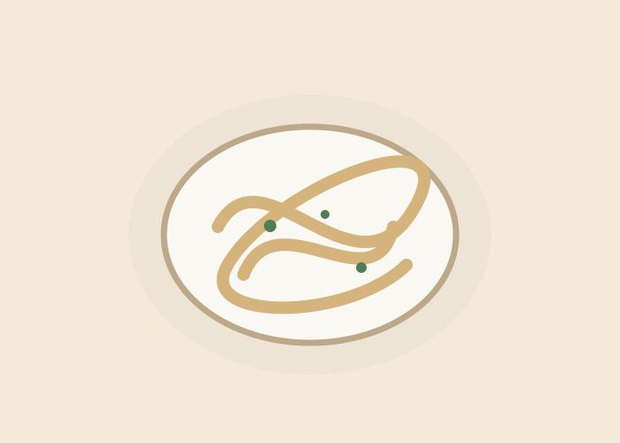

Von schnellen Gerichten bis zu besonderen Klassikern.
Alles, was wir gerne kochen und backen – an einem Ort.
Schreib einfach auf, was du gekocht hast. Die KI ergänzt fehlende Angaben und markiert Schätzungen.
Hier nur die öffentliche Worker-URL eintragen, niemals einen API-Schlüssel. Die Adresse bleibt auf diesem Gerät gespeichert.

Wähle dein eigenes Titelbild und bestimme, wie dezent es erscheinen soll.
Änderungen werden auf diesem Gerät gespeichert.
 うまい
うまい